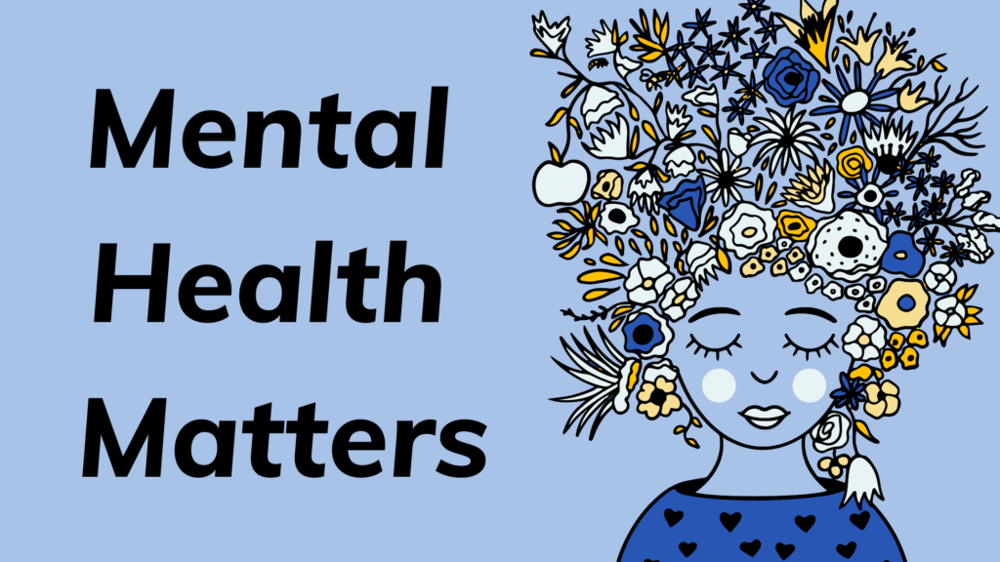
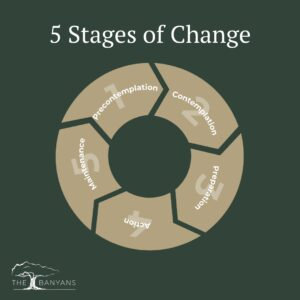

Mental health refers to a person’s emotional, psychological, and social well-being. It affects how people think, feel, handle stress, relate to others, and make decisions. Good mental health does not mean feeling happy all the time. It usually means being able to:
cope with everyday stress,
function in work or school,
maintain relationships,
recover from setbacks,
and experience a range of emotions in a balanced way.

Mental health can be influenced by many factors. Usually, it’s a combination of different things rather than one single cause.
Biological factors
Genetics or family history of mental illness
Brain chemistry and hormones
Physical illnesses or injuries
Lack of sleep or poor nutrition
Psychological factors
Low self-esteem
Negative thinking patterns
Trauma or abuse
Difficulty handling stress
Social and environmental factors
Family problems or relationship conflicts
Bullying or discrimination
Financial stress or unemployment
Loneliness or lack of support
Academic or work pressure
Substance or alcohol misuse
Life experiences
Loss of a loved one
Major life changes
Childhood neglect or violence
Exposure to disasters or conflict
Signs of Mental Health Issues
There are signs that someone may be struggling with mental health common signs can include:
Feeling sad, empty, or hopeless for a long time
Constant worry, fear, or panic
Losing interest in activities they used to enjoy
Changes in sleep — sleeping too much or too little
Changes in appetite or weight
Low energy or constant tiredness
Difficulty concentrating or making decisions
Irritability, anger, or mood swings
Withdrawing from friends and family
Feeling overwhelmed or unable to cope with daily life
Physical symptoms like headaches or stomach aches without a clear cause
Thoughts of self-harm or suicide (this is serious and needs immediate support)
Mental Health Issues Stages.
Mental health issues do not follow a universal linear timeline, but clinicians often observe a progression from initial stress to clinical disorder. Here are the common stages of development:
1. The Stress/Trigger Stage
Cause: Factors of Mental Health.
Symptoms: Increased irritability, difficulty sleeping, or feeling "on edge."
Status: This is a normal reaction to abnormal circumstances. It is not yet a mental illness.
2. The Coping/Adjustment Stage
Process: The individual attempts to manage stress through various methods.
Healthy Coping: Exercise, talking to friends, or setting boundaries.
Maladaptive Coping: Overworking, social withdrawal, or substance use to "numb" the feeling.
Status: The person is struggling to maintain equilibrium.
3. The Symptom Emergence Stage
Shift: Stress becomes chronic, and coping mechanisms fail.
Symptoms: Persistent sadness, anxiety, changes in appetite, or intrusive thoughts.
Impact: Symptoms begin to interfere with daily tasks (e.g., missing work, neglecting hygiene).
Status: This is the "sub-clinical" phase where professional intervention is highly effective.
4. The Clinical/Disorder Stage
Definition: Symptoms meet the criteria for a specific diagnosis (e.g., Major Depressive Disorder, GAD).
Symptoms: Severe impairment in functioning. Physical symptoms may emerge (panic attacks, chronic fatigue).
Status: The condition is now a recognized mental health disorder requiring clinical treatment (therapy, medication).
5. The Crisis Stage
Nature: An acute escalation of symptoms.
Risks: Potential for self-harm, suicidal ideation, psychosis, or complete inability to function.
Note: Mental health is non-linear. A person can move back and forth between stages (relapse and recovery) throughout their life.

Supporting Mental Health
How to Support Others~
Supporting someone requires a balance of empathy and boundaries.
The "Listen to Understand" Approach: Avoid the urge to "fix" their problem immediately. Often, people need to feel heard before they can process solutions.
Avoid Minimizing Language: Steer clear of phrases like "It could be worse," "Just stay positive," or "You're overreacting." These invalidate their reality.
Practical Assistance: Instead of saying "Let me know if you need anything" (which puts the burden on them), offer specific help: "Can I bring you dinner on Tuesday?" or "Can I help you research therapists?"
Safety First: If they express thoughts of self-harm, do not keep it a secret. Encourage professional intervention or contact a crisis line immediately.
How to Support Ourselves
Self-support is about building resilience and recognizing when your "battery" is low.
Emotional Regulation: Practice "Grounding Techniques" during high stress. The 5-4-3-2-1 method (identifying 5 things you see, 4 you feel, 3 you hear, 2 you smell, and 1 you taste) helps pull you out of an anxiety spiral.
Cognitive Reframing: When negative thoughts arise, challenge them. Ask: "Is this thought a fact, or is it a feeling?" or "What would I say to a friend in this situation?"
The "Low-Capacity" Plan: Create a list of "survival tasks" for bad days (e.g., drinking water, taking a shower, stepping outside for 5 minutes). Lower the bar when your mental energy is depleted.
Professional Maintenance: Therapy is not just for crises; it is a tool for mental "preventative maintenance" to build coping mechanisms before a crisis hits.

.jpeg)